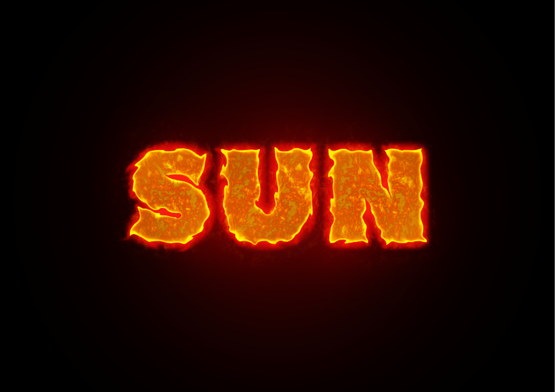
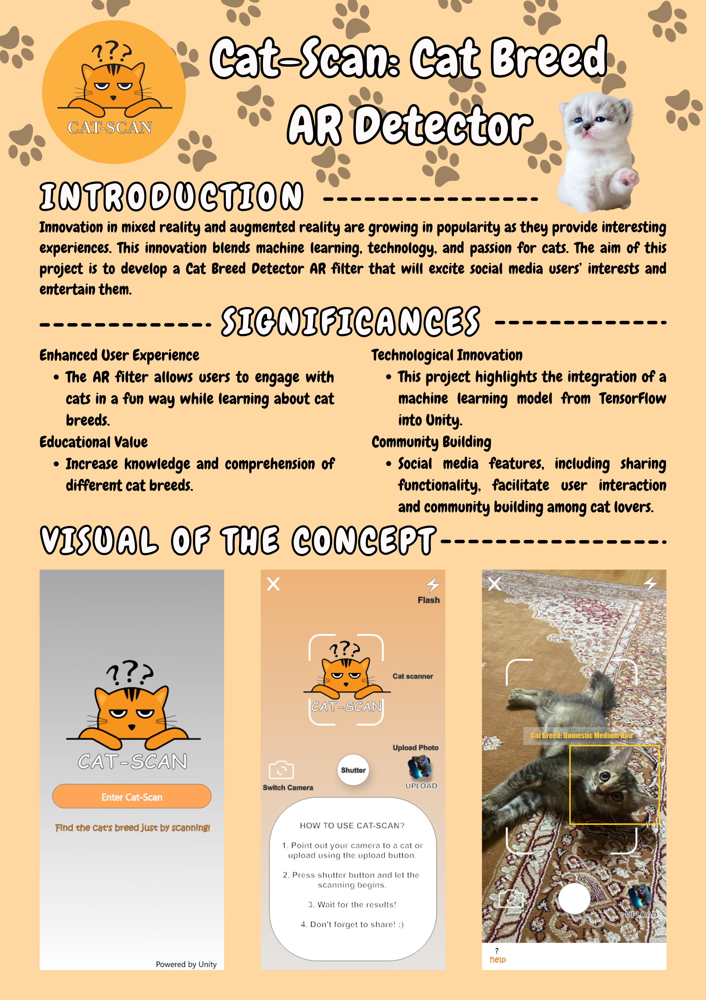
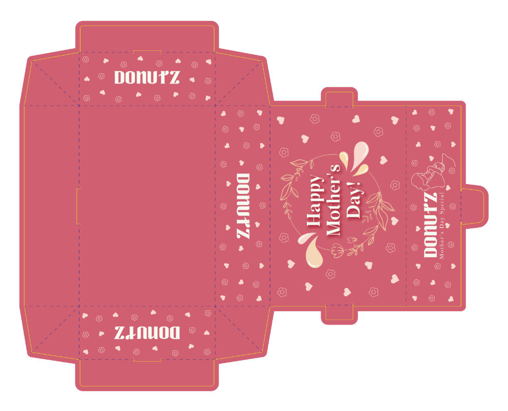

Explore my projects and skills.
This project is created during Typography subject, which is create a typography that describing the word. The word chosen for this project is Sun. To describe the sun, I used fire image and create clipping mask to describe the sun is hot. The black background is used to emphasise the typography.
Cat-scan is a cat breed detector AR app which can scan cat breed in real time. This project is developed during Mixed Reality subject.
This project requires to create a packaging design for donuts. The project was created using Adobe Illustrator.
